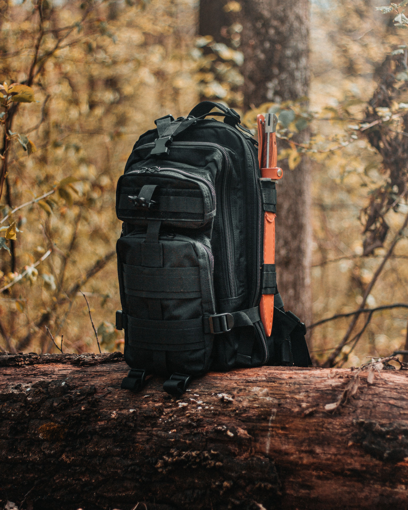
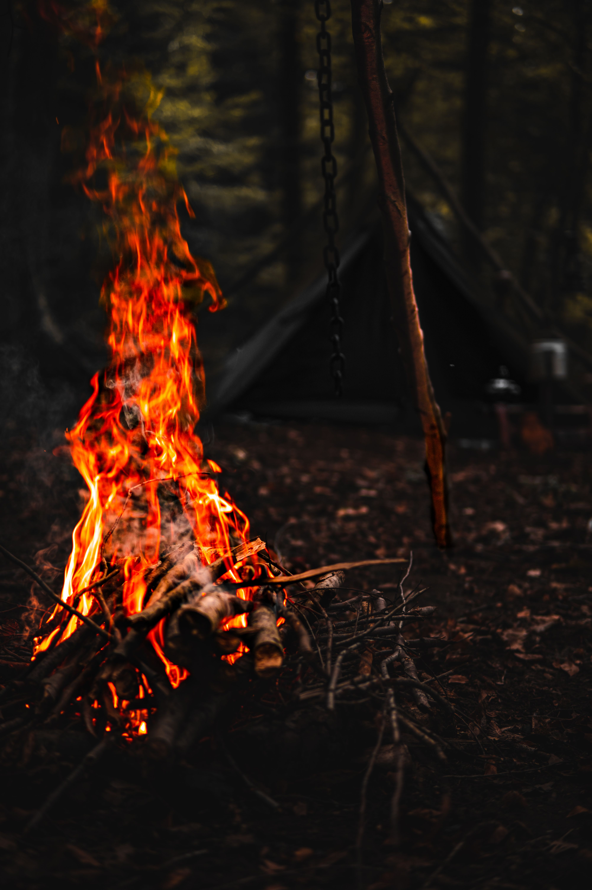
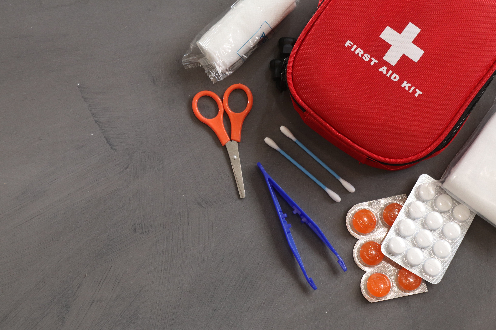

Cómo preparar una mochila para nuestras aventuras

Una mochila bien organizada nos permite transportar todo el equipamiento
necesario sin cargar peso innecesario y balanceando adecuadamente nuestro
centro de gravedad, este último tema es de vital importancia en el caso de senderismo
de alta montaña o de caminos con dificultades media a elevada con zonas expuestas, ya que
influyen directamente en el cansancio acumulado a lo largo del día y en el equilibrio
necesario en tramos técnicos.
Es recomendable priorizar agua, abrigo, iluminación, botiquín y herramientas
básicas para resolver imprevistos durante una salida al aire libre eventual, trekking,
camping o en el caso que seamos guías y no sepamos si el equipo de gente que lideramos
llevará todo lo necesario para la aventura en cuestión.
La importancia del fuego en supervivencia

El fuego permite cocinar alimentos, purificar agua, proporcionar calor y mejorar la moral
en situaciones difíciles. Aprender métodos alternativos de encendido es una habilidad fundamental
para cualquier aficionado al bushcraft.
Además de brindar confort, el fuego puede utilizarse como herramienta de señalización en situaciones
de emergencia, ayudando a ser localizado por otras personas o equipos de rescate. También permite
secar ropa húmeda, reducir la sensación térmica en ambientes fríos y ahuyentar algunos animales.
Por este motivo, es recomendable practicar distintas técnicas de encendido y conocer los materiales
más adecuados para iniciar una fogata de manera segura y responsable, siempre respetando las normas
del lugar y el cuidado del medio ambiente.
Primeros auxilios básicos en actividades outdoor

Contar con conocimientos básicos de primeros auxilios ayuda a responder de manera rápida ante cortes,
quemaduras, torceduras y otras emergencias frecuentes en campamentos y excursiones.
Un botiquín correctamente equipado puede marcar una gran diferencia durante una salida al aire libre.
Elementos como vendas, gasas, desinfectantes, guantes descartables y apósitos permiten atender
lesiones menores hasta recibir asistencia profesional si fuera necesario. También es importante
conocer técnicas básicas de inmovilización, control de hemorragias y evaluación inicial de una persona
lesionada. La prevención y la preparación son herramientas fundamentales para disfrutar de las actividades
outdoor con mayor seguridad.